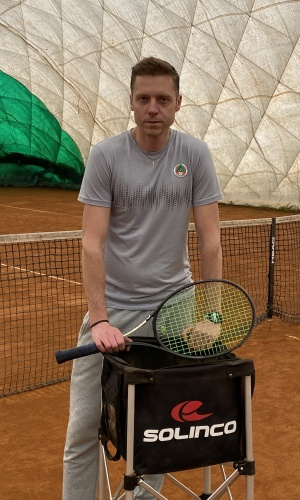
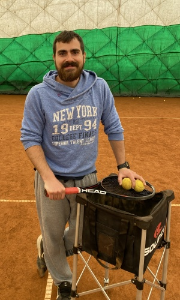
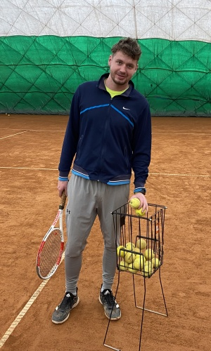
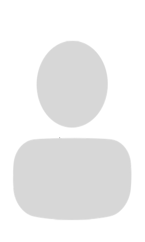
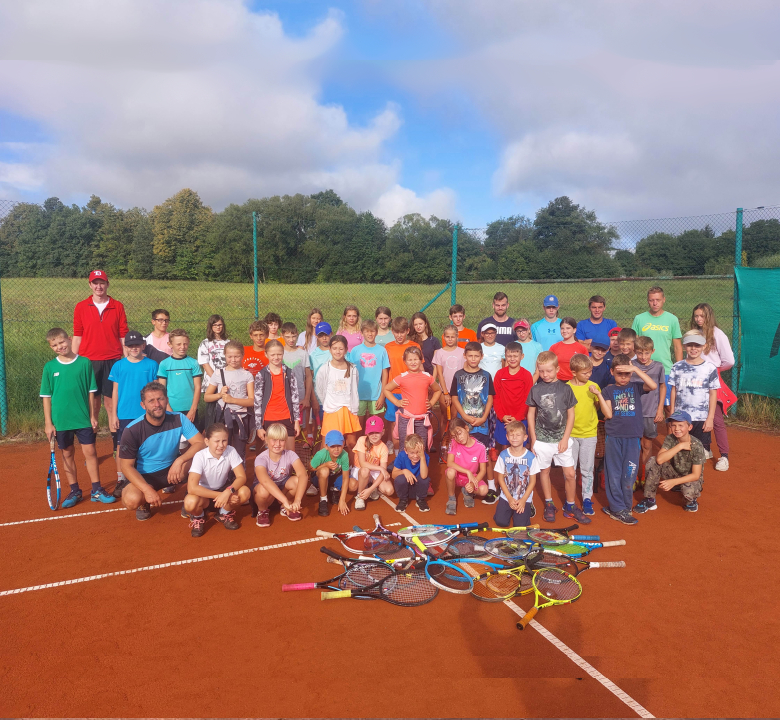
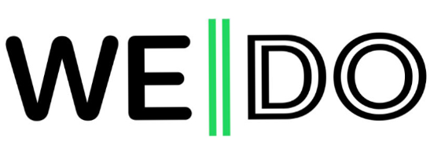

Tenisový areál TJ Sokol Stará Bělá
Tenisové kurty se nachází v těsném sousedství fotbalového hřiště a koupaliště v Ostravě - Stará Bělá. K dispozici je 7 antukových tenisových kurtů (z toho 3 mají umělé osvětlení), cvičná odrazová stěna, terasa s venkovním posezením a občerstvením.
Rezervace kurtů
Rezervovat kurty lze přes rezervační systém nebo telefonicky 737 560 427.
POZOR!!! Rezervaci lze zrušit nejpozději 24h předem. Pokud již rezervační systém neumožní Vaši rezervaci zrušit, je nutno kontaktovat správce kurtů v pracovní době 8:00 - 20:00.
TIP PRO ZÁKAZNÍKY!!!
Každý den od neděle do čtvrtku se po 20:00 v rezervačním systému otevírají kurty číslo 5 a 6 pro veřejnost v časech 15:00 - 20:00 na následující pracovní den. Máte tedy možnost obsadit případné volné hodiny na těchto kurtech, které členové oddílu nevyužili. (např. v pondělí ve 20:01 se zobrazí případní volné hodiny k rezervaci na kurtech č. 4 a 5 na úterý).
Ceník kurtů
| LETNÍ SEZÓNA (duben - říjen) | |
|---|---|
| 8:00 - 14:00 | 130 Kč/hod. |
| 14:00 - 20:00 | 150 Kč/hod. |
| K dispozici slouží 7 antukových kurtů, z toho 3 disponují umělým osvětlením. | |
| ZIMNÍ SEZÓNA (říjen - duben) | |
|---|---|
| 8:00 - 22:00 | 400 Kč/hod. |
| K dispozici jsou 2 antukové kurty v přetlakové hale. | |
Tenisová škola
Tenisová škola působí v rámci tenisového oddílu od roku 2002 a soustředí se hlavně na výchovu dětí a mládeže, jak pro závodní, tak i pro rekreační tenis. V rámci tenisové školy jsou také nabízeny velmi oblíbené a hojně navštěvované "Lekce pro dospělé".
Organizační řád Tenisové školy
Primárním cílem tenisové školy je vychovat co nejvíce mladých tenistů, naučit je lásce k tomuto sportu, a vytvořit takové tréninkové podmínky, které zaručí jejich sportovní růst. Ti nejlepší, kteří mají závodní ambice, se mohou stát členem některého z družstev dle věkové kategorie a hrát registrované soutěže Českého tenisového svazu (ČTS).
Naše tenisová škola má aktuálně tyto družstva (kliknutím se dostanete na výsledky daných družstev ČTS):
Úspěchy tenisové školy

2022
Kristýna Přikrylová
..jpg)
2022
Babytenisový tým
(8 - 9 let)
(1)..jpg)
2021
Minitenisový tým
(6 - 7 let)
..jpg)
2021
Minitenisový tým
(6 - 7 let)

2020
Minitenisový tým
(6 - 7 let)

2020
Kristýna Přikrylová
| Počet hráčů | Cena za 1 osobu |
|---|---|
| 1 hráč | 400 Kč |
| 2 hráči | 220 Kč |
| 3 hráči | 150 Kč |
| 4 hráči | 120 Kč |
| Cena je vždy za 1 tréninkovou jednotku (60 minut) a zahrnuje i pronájem kurtu (neplatí pro zimní sezónu). |
|
Trenérský tým

Jiří Priesol

Jakub Jüttner

Mgr. Marek Holaň

Ing. Tomáš Vrzala
Příměstský tenisový tábor
📅 Termín: 10. 7. - 14. 7. 2023
Tenisová škola každoročně v červenci pro děti pořádá Příměstský tenisový tábor konaný v našem areálu, jehož obsahem jsou především tenisové tréninky, kondiční a koordinační cvičení a hry. V rámci relaxace návštěva sousedního koupaliště. Pro hráče je zajištěn oběd + pitný režim, pronájem kurtů, kvalifikovaní trenéři, vstupy na koupaliště. V blížícím se termínu zde vyvěsíme letáček s podrobnostmi, popřípadě informace a dotazy zodpoví Jirka Priesol.
Tenisové soustředění
Tenisová škola pro své svěřence pořádá každý rok v srpnu Tenisové soustředění v Beskydech v obci Hutisko-Solanec. Jedná se o šestidenní pobyt plný tenisu a her.
📅 Termín: 28. 8. - 2. 9. 2023

Ubytování je v Turist hotelu Euro v obci Hutisko-Solanec asi 7 km od Rožnova pod Radhoštěm ve dvou-pětilůžkových pokojích. V areálu přilehlého kempu je k dispozici široké sportovní zázemí (4 antukové kurty, bazén, sportovní hřiště, fotbalové hřiště a posilovna).
Hlavním programem soustředění budou tenisové tréninky přímo v areálu. Děti se zdokonalí v tenise, zlepší svou fyzickou kondici, a to pod vedením zkušených trenérů. Jako doplňkové sporty jsou zařazeny fotbal, floorbal, jiné míčové hry, bazén. Po celou dobu soustředění probíhají celotáborové hry a soutěže, doplněné večerním promítáním filmů a výlety do okolní přírody.
Toto tenisové soustředění probíhá společně s přátelským oddílem TJ Sokol Dolní Lhota (Jiří Výtisk).
Zodpovědná osoba: Jiří Priesol • tel. 604 601 387 • mail: jpriesol@seznam.cz
Tenisový obchod
Tenisový obchod je umístěn v 1. patře našeho areálu.

Po-Čt • 8:00-11:30 • 13:00-16:00
Pátek • 8:00-11:30 • 13:00-15:00
Daniel Polášek • Tel. 603 335 254
Turnaje pro amatérské hráče
Na našich kurtech se v létě konají turnaje pro amatérské hráče, které pořádá OVopen.
Kontakt
TJ Sokol Stará Bělá z. s.
Nad Rybníkem 1173/7
724 00 Ostrava - Stará Bělá
IČ: 44743980